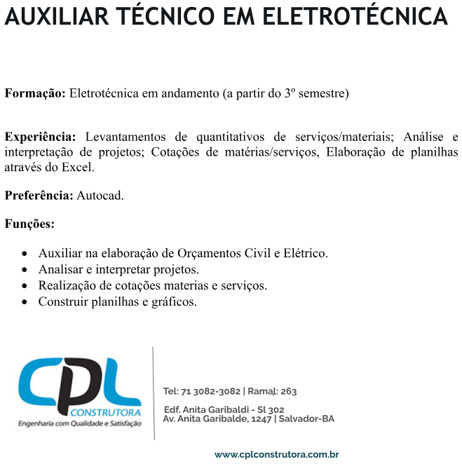
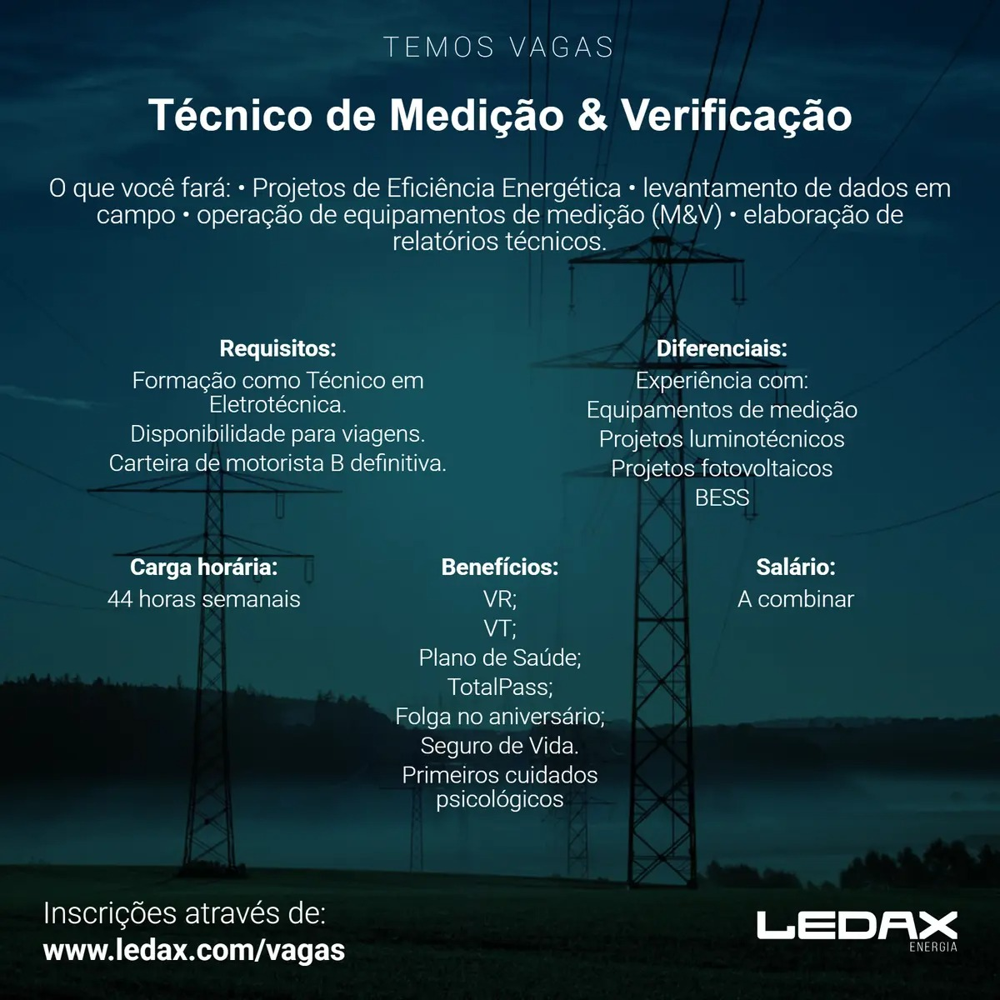

Vagas de estágio e de emprego
As vagas abaixo chegaram à coordenação por e-mail das próprias empresas. A coordenação divulga; ela não seleciona, não encaminha currículo e não intermedeia a contratação.
Vagas de estágio
-
Recebida em 11/09/2026
Estágio em Eletrotécnica ou Eletrônica
Globaltec
- Carga horária: 6 horas por dia
- Turno: matutino ou vespertino
- Bolsa de R$ 850,00, com meio vale-transporte
Como se candidatar. Envie o currículo para o endereço que está no cartaz.

Toque no cartaz para ampliar. -
Recebida em 11/09/2026
Estágio em Eletrotécnica ou Eletrônica
E-Caza Soluções Tecnológicas
- Exige matrícula a partir do 3º semestre
- Exige CNH categoria A ou B
- Bolsa auxílio e vale-transporte
- Carga horária: 30 horas semanais
Como se candidatar. Envie o currículo para o endereço que está no cartaz.

Toque no cartaz para ampliar. -
Recebida em 11/09/2026
Auxiliar técnico em Eletrotécnica
CPL Construtora
- Exige matrícula a partir do 3º semestre
- Levantamento de quantitativos, leitura de projeto e cotação
- Cotação de materiais e de serviços
- Planilhas em Excel; AutoCAD é diferencial
Como se candidatar. Procure a empresa pelo site ou pelo telefone que estão no cartaz. A coordenação não encaminha currículo.

Toque no cartaz para ampliar.
{kind=link}
Vagas de emprego
-
Recebida em 15/09/2026
Técnico de Manutenção de Linhas de Transmissão
AXIA Energia
- Exige curso técnico em Eletrotécnica concluído e registro ativo no CFT ou no CREA
- Exige experiência em manutenção, montagem ou inspeção de linhas de transmissão de alta tensão
- Local: Salvador, presencial; disponibilidade para viagens, trabalho em altura e sobreaviso
- Vaga efetiva; a seleção tem entrevistas, teste de aptidão física e avaliação psicológica
Como se candidatar. Faça a inscrição na página da vaga, na Gupy, até 30/09/2026.
Fica no ar até 30/09/2026.
-
Recebida em 15/09/2026
Técnico de Medição e Verificação
Ledax Energia
- Exige formação de técnico em Eletrotécnica
- Exige CNH categoria B definitiva e disponibilidade para viagens
- Projetos de eficiência energética, medição em campo e relatórios técnicos
- Carga horária: 44 horas semanais; salário a combinar
Como se candidatar. Faça a inscrição no site da empresa, que está no cartaz.

Toque no cartaz para ampliar. -
Recebida em 11/09/2026
Técnico de Manutenção
GR Engenharia
- Exige curso técnico concluído ou em fase de conclusão
- Local: Aratu, Salvador; disponibilidade para viagens
- Regime CLT ou PJ, das 8h às 17h; salário a combinar
- Uso de multímetro
Como se candidatar. Envie o currículo para o endereço que está no cartaz.
Toque no cartaz para ampliar.
{kind=link}
{kind=link}
Você é de uma empresa e quer divulgar uma vaga?
Envie o cartaz da vaga à coordenação do curso. Diga se a vaga é de estágio ou de emprego. Peça que o cartaz traga o contato da empresa, e não o telefone pessoal de quem recruta: esta página é aberta, e os buscadores guardam o que ela mostra.